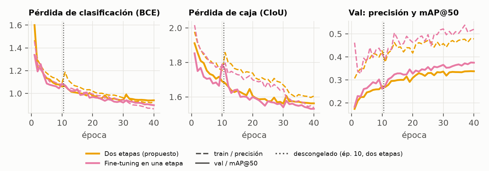
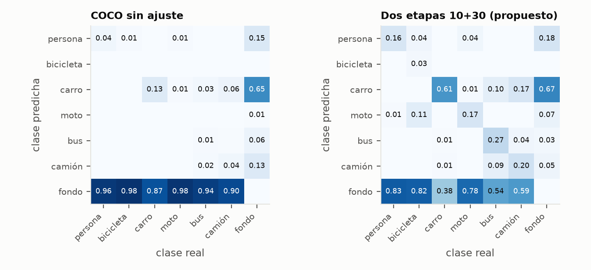
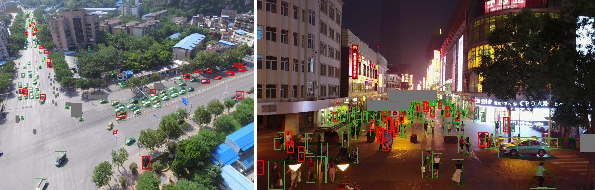

Carga. prepare_data.py lee las imágenes de los zips oficiales de VisDrone2019-DET, convierte las anotaciones al formato YOLO normalizado (clase xc yc w h en [0, 1]) y agrupa las 10 categorías en 6 clases que también existen en COCO: persona (pedestrian + people), bicicleta, carro (car + van), moto, bus y camión. Así el modelo COCO se puede evaluar sin reentrenar, como línea base justa. Los triciclos, las ignored regions y others se enmascaran en gris en lugar de borrarse; si se borraran, el modelo aprendería a tratarlos como fondo y sus detecciones contarían como falsos positivos. La conversión tiene pruebas unitarias.
Normalización. Las imágenes se reducen a 1.024 px en el lado mayor al prepararlas. Durante el entrenamiento, Ultralytics aplica letterbox a 640×640 con relleno gris, convierte BGR→RGB y escala los píxeles a [0, 1]. No se resta la media ni se divide por la desviación de ImageNet, porque los pesos de YOLO11 se preentrenaron con esa misma escala [0, 1]; cambiarla rompería la transferencia.
Particiones y fuga de información. Se usan los splits oficiales de VisDrone, que provienen de secuencias de video disjuntas. Equivale a un group split: dos cuadros casi idénticos del mismo clip nunca quedan uno en train y otro en test. Por límites de cómputo se tomaron 2.000 de las 6.471 imágenes de train, muestreadas en round-robin por secuencia (semilla 0) para conservar la diversidad de escenas; val y test se usan completos.
| Split | Imágenes | persona | bicicleta | carro | moto | bus | camión | Total | Uso |
|---|---|---|---|---|---|---|---|---|---|
| train | 2.000 | 43.732 | 4.748 | 58.520 | 12.371 | 1.409 | 3.819 | 124.599 | ajuste de pesos |
| val | 548 | 13.969 | 1.287 | 16.039 | 4.886 | 251 | 750 | 37.182 | selección de época y curvas |
| test | 1.610 | 27.382 | 1.302 | 33.845 | 5.845 | 2.940 | 2.659 | 73.973 | reporte final únicamente |
Aumentación aleatoria (solo en train). Mosaic (p = 1; Ultralytics lo apaga en las últimas 10 épocas de cada corrida, así que la Etapa 1, de 10 épocas, entrena sin mosaic), flip horizontal (p = 0,5), variación HSV (h = 0,015, s = 0,7, v = 0,4), escala (±50 %) y traslación (±10 %). Val y test solo pasan por letterbox. El desbalance es marcado: carro y persona suman el 82 % de las instancias de train, y bus solo el 1,1 %.
Modelo base. YOLO11n (2,61 M de parámetros), cargado explícitamente desde los pesos COCO con YOLO("yolo11n.pt"). Backbone: módulos 0-10 (Conv/C3k2, SPPF, atención C2PSA); cuello PAN-FPN: 11-22; cabeza Detect desacoplada y sin anclas: 23. Capa de salida propia: las convoluciones finales de clasificación se reemplazan por unas de 6 salidas inicializadas al azar, una por clase; las ramas de regresión de caja se conservan porque la geometría de las cajas no depende de las clases.
Ltotal = λbox·LCIoU + λcls·LBCE + λdfl·LDFL, con λ = (7,5; 0,5; 1,5) y LBCE = −Σc [yc log pc + (1 − yc) log(1 − pc)]
La clasificación usa entropía cruzada binaria por clase (sigmoide). CIoU penaliza superposición, distancia entre centros y proporción; DFL modela cada borde como una distribución discreta. El optimizador es AdamW (Adam con weight decay desacoplado).
Etapa 1, backbone congelado (freeze=11, 10 épocas, LR 1e-3). Solo se entrenan cuello y cabeza: la cabeza nueva arranca al azar y sus gradientes grandes degradarían los filtros preentrenados si el backbone estuviera libre. Evidencia: comparando checkpoints módulo por módulo, el backbone tiene |Δw|máx = 0 exacto entre yolo11n.pt y la Etapa 1, mientras que el cuello y la cabeza cambian hasta 2,02.
Etapa 2, fine-tuning completo (freeze=0, 30 épocas, LR 2e-4 → 1e-5 con decaimiento coseno y sin warmup). Se descongela desde la capa 0 porque el dominio aéreo cambia hasta los rasgos de bajo nivel (escala diminuta, vista cenital, texturas de techo y pavimento); aquí el backbone sí se mueve (|Δw|máx = 0,05). El LR es 5 veces menor para adaptar sin olvido catastrófico.
| Hiperparámetro | Etapa 1 | Etapa 2 | Justificación |
|---|---|---|---|
| Optimizador | AdamW (β1 = 0,937, β2 = 0,999), weight decay 5e-4 | Adam con decaimiento desacoplado; converge con LR fijo sin ajuste fino de momentum. | |
| Pérdida | BCE (entropía cruzada binaria por clase) ×0,5 + CIoU ×7,5 + DFL ×1,5 | La clasificación multietiqueta usa entropía cruzada; CIoU y DFL localizan. | |
| LR inicial → final | 1e-3 → 1e-5 lineal | 2e-4 → 1e-5 coseno | Paso grande para la cabeza nueva; paso fino para no destruir el backbone. |
| Warmup | 1 época | 0 | La Etapa 2 parte de pesos ya estables. |
| Capas entrenables | 11-23 | 0-23 | Congelar el backbone (0-10) estabiliza la cabeza. |
Comunes: imgsz 640, batch 16, semilla 0, deterministic=True, 2.000 imágenes de train, el mejor checkpoint se elige por mAP@50-95 en val, sin early stopping (paciencia igual al número de épocas, para que todas las corridas tengan el mismo presupuesto). | |||
experiments.py): YOLO("yolo11n.pt").train(freeze=11, epochs=10, lr0=1e-3, optimizer="AdamW", seed=0, ...) → Etapa 1; YOLO("runs/act3/stage1/weights/best.pt").train(freeze=0, epochs=30, lr0=2e-4, cos_lr=True, ...) → Etapa 2. Ultralytics transfiere todos los tensores de igual forma (todo menos las convoluciones finales de clase) y congela model.0. a model.10.
Con el backbone fijo, el mAP@50 en val sube de 17,4 % a 27,2 %; al descongelar sigue subiendo hasta 33,8 %, lo que confirma que adaptar el backbone aporta. Las pérdidas de validación bajan en paralelo a las de entrenamiento, sin divergir. El salto de la pérdida de train en la época 11 no es inestabilidad: la Etapa 1 corrió sin mosaic y la Etapa 2 lo reactiva; la de val, sin aumentación, no salta. Al apagarse el mosaic (época 31) hay una caída puntual del mAP que se recupera en 1-2 épocas, y con el LR casi nulo del final la curva se estabiliza.
| Hito | Época | box train | box val | cls train | cls val | Precisión val (%) | mAP@50 val (%) |
|---|---|---|---|---|---|---|---|
| Inicio, Etapa 1 (backbone congelado) | 1 | 1,98 | 1,91 | 1,47 | 1,60 | 30,7 | 17,4 |
| Fin de la Etapa 1 | 10 | 1,75 | 1,69 | 1,09 | 1,06 | 42,7 | 27,2 |
| Descongelamiento (inicio de la Etapa 2) | 11 | 1,86 | 1,68 | 1,19 | 1,06 | 37,8 | 26,9 |
| Se apaga el mosaic | 31 | 1,65 | 1,61 | 0,99 | 0,98 | 44,3 | 31,9 |
| Mejores pesos (máx. mAP@50-95 val) | 37 | 1,60 | 1,57 | 0,92 | 0,94 | 47,7 | 33,7 |
| Cierre | 40 | 1,60 | 1,56 | 0,92 | 0,94 | 47,8 | 33,8 |
| Modelo (mejores pesos) | mAP@50 train | mAP@50 val | mAP@50 test |
|---|---|---|---|
| Etapa 1 (backbone congelado) | 28,5 | 26,5 | 19,2 |
| Dos etapas 10+30 (propuesto) | 39,6 | 32,9 | 24,9 |
Brecha: los mismos pesos, sin aumentación, en los tres splits. Un train mayor es esperable con 2.000 imágenes; la caída de val a test mide la generalización a secuencias nuevas.
| Modelo | mAP@50 (%) | mAP@50-95 (%) | Precisión (%) | Recall (%) | Épocas | Entrenamiento M4 (min) |
|---|---|---|---|---|---|---|
| COCO sin ajuste | 6,2 | 3,1 | 23,3 | 8,8 | 0 | — |
| Desde cero | 15,5 | 7,3 | 29,5 | 18,3 | 40 | — |
| Etapa 1 (backbone congelado) | 19,2 | 10,0 | 33,5 | 21,8 | 10 | 25 |
| Dos etapas 10+30 (propuesto) | 24,9 | 13,0 | 39,4 | 26,8 | 40 | 102 |
| Mejora del propuesto frente a COCO sin ajuste | ×4,0 (+18,7 pp) | ×4,2 | ||||
| Mejora del propuesto frente a desde cero | ×1,6 (+9,4 pp) | ×1,8 | ||||
Métricas macro sobre las 6 clases, con NMS IoU 0,7 y conf 0,001 para mAP. Precisión y recall están en el punto de máximo F1. Todas las corridas usan el mismo dataset, semilla, imgsz, batch, optimizador y presupuesto de épocas; los tiempos solo son comparables dentro del mismo equipo. En detección no se reporta accuracy: no existen verdaderos negativos contables (cada píxel de fondo sería uno), así que el equivalente multiclase son la precisión, el recall y el F1 por clase, con el mAP como resumen independiente del umbral.
| Clase (modelo propuesto) | Precisión | Recall | F1 | AP@50 | AP@50-95 | AP@50 COCO sin ajuste | Instancias |
|---|---|---|---|---|---|---|---|
| persona | 0,466 | 0,171 | 0,250 | 0,170 | 0,061 | 0,073 | 27.382 |
| bicicleta | 0,270 | 0,040 | 0,070 | 0,047 | 0,017 | 0,008 | 1.302 |
| carro | 0,541 | 0,623 | 0,579 | 0,609 | 0,341 | 0,200 | 33.845 |
| moto | 0,324 | 0,201 | 0,248 | 0,159 | 0,054 | 0,022 | 5.845 |
| bus | 0,511 | 0,329 | 0,400 | 0,323 | 0,205 | 0,027 | 2.940 |
| camión | 0,252 | 0,246 | 0,249 | 0,187 | 0,104 | 0,041 | 2.659 |
| macro | 0,394 | 0,268 | 0,299 | 0,249 | 0,130 | 0,062 | 73.973 |
Errores que se repiten (leídos en la matriz del modelo propuesto, Figura 3):


La mejor clase en AP@50 es carro (0,609), la que tiene más instancias y objetos más grandes, y la peor es bicicleta (0,047), pequeña y escasa.
deterministic=True esté activo. Los triciclos quedan fuera del problema.python -m transfer_learning.prepare_data --download, python -m transfer_learning.experiments all, el notebook transfer_learning/act3_transfer_learning.ipynb y python -m transfer_learning.report.build_report.